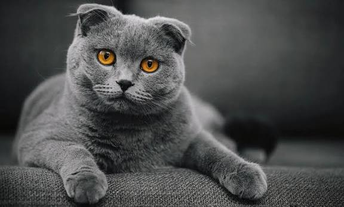
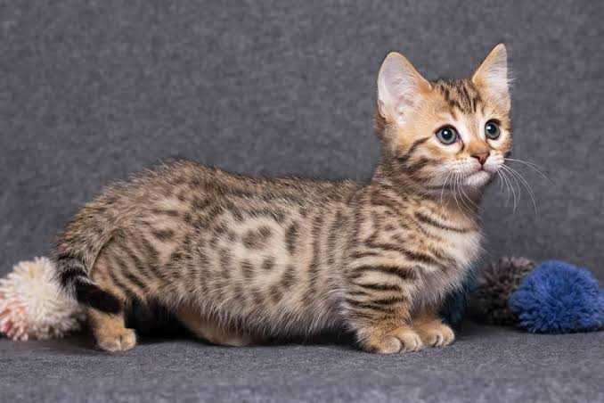
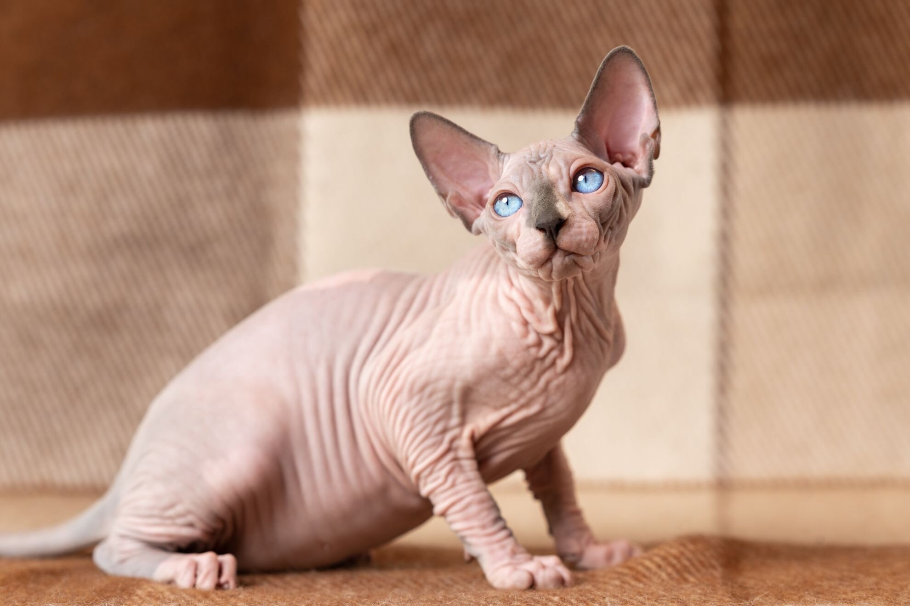
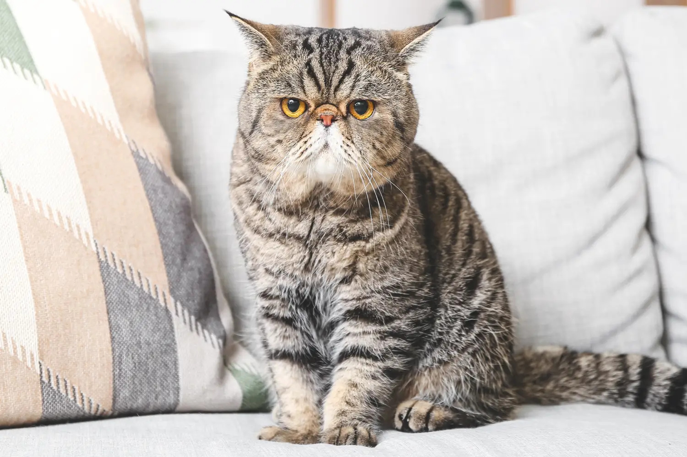
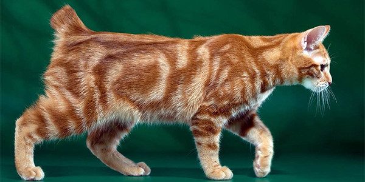

Günümüzde çoğu aile, evinde küçük tüy yumaklarının bakımını üstlenmektedir. Tabii ki hiç kimse, küçük dostundan sağlık sorunları nedeni ile erken ayrılmak istemez. Bu nedenle genetik hastalıklara yatkın olan kedi türleri hakkında bilgi sahibi olmak büyük önem taşır.
Bazı kedi türleri, insan müdahalesi ve genetik mutasyonlar nedeniyle sağlık sorunlarına çok daha yatkın olabilir. En çok sağlık sorunu yaşayan kedi ırkları şunlardır;

Kıvrık kulakları ile dünya çapında çok popüler olan Scottish Fold kedileri, ne yazık ki bu sevimli görünümü genetik bir kıkırdak ve kemik hastalığına borçludur. Osteokondrodisplazi adı verilen bu durum, hayatları boyunca eklem ağrıları çekmelerine ve hareket güçlüğü yaşamalarına neden olabilir.
Başa Dön
Kısa bacakları ile bilinen Munchkin cinsi, genetik bir mutasyon sonucu bu görünüme sahiptir. Kısa bacakları nedeniyle omurga sorunlarına, göğüs kafesi deformasyonlarına (pektus ekskavatum) ve ilerleyen yaşlarda şiddetli ağrılara yol açabilen eklem hastalıklarına oldukça yatkındırlar.
Başa Dön
Tüysüz yapılarıyla dikkat çeken Sfenks kedileri, koruyucu bir tüy tabakası olmadığı için cilt hastalıklarına ve güneş yanıklarına karşı çok hassastır. Ayrıca hipertrofik kardiyomiyopati (HKM) gibi ciddi kalp hastalıklarına genetik olarak en yatkın kedi ırklarından biridir. Düzenli veteriner kontrolü şarttır.
Başa Dön
Basık yüzlü (brakisefalik) bir ırk olan Exotic Shorthair, solunum yolu hastalıklarına son derece yatkındır. Kısa burunları nedeniyle nefes almakta zorlanırlar; ayrıca sürekli akan gözyaşı kanalı tıkanıklıkları, diş problemleri ve polikistik böbrek hastalığı bu ırkta çok sık görülür.
Başa Dön
Kuyruksuz olmaları ile bilinen Manx kedileri, bu özelliklerini bir omurga mutasyonundan alırlar. Bu genetik yapı, "Manx sendromu" adı verilen, ciddi omurilik kusurlarına, bağırsak ve mesane problemlerine yol açan, bazen ölümcül olabilen rahatsızlıklara neden olmaktadır.
Başa Dön